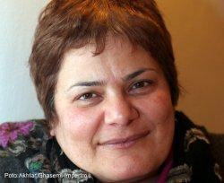

پذيرش > سایت نوشته ها > فمنیسم اسلامی در ایران واقعیت خارجی ندارد- بخش پایانی


 فمنیسم اسلامی در ایران واقعیت خارجی ندارد- بخش پایانی فمنیسم اسلامی در ایران واقعیت خارجی ندارد- بخش پایانی
14 تیر 1390 - گفتگو با محبوبه عباسقلی زاده - نسخه قابل چاپ
روجا فضائلی، مریم حسینخواه: فمنیسم اسلامی و میزان اهمیت آن در جنبش زنان ایران از جمله موضوعات بحثبرانگیز در جنبش زنان ایران است که نظرات متفاوتی پیرامون آن وجود دارد. محبوبه عباسقلیزاده، فعال حقوق زنان که از نخستین سالهای پس از انقلاب در رابطه با مسائل زنان در ایران فعال بوده و تجربه همکاری با گروههای مختلف مذهبی و سکولار را در زمینه زنان دارد، در بخش اول گفتوگو با رادیو زمانه در رابطه با آغاز حساسیتهای جنسیتی در بین زنان مذهبی در سالهای نخست پس از انقلاب سخن گفت، او در بخش پایانی این مصاحبه نظرات خود درباره فمنیسم اسلامی و مسلمان را بیان میکند و به کاربرد عملی این مفاهیم در جنبش زنان ایران میپردازد. این گفتوگو یکی از سلسله مصاحبههایی است که با شماری از فعالان حقوق زنان و صاحبنظران این حوزه در رابطه با «فمنیسم اسلامی» انجام شده است.
مباحث مربوط به «مسلم فمنیست» از چه زمانی مطرح شد؟
محبوبه عباسقلیزاده- «فمنیست اسلامی» از نظر من یعنی کسی که در چارچوب اسلام و قران در مورد تکلیفش پرسش میکند. اما «فمنیست مسلمان» کسی است که بحث فرهنگ و زمینههای اجتماعی و واقعیتهای اجتماعی را هم وارد این ماجرا میکند و درباره «حق زنانه» هم پرسش دارد و فقط به دنبال «تکلیفش» نیست.
چیزی که من در برخی مذهبیهای طرفدار آیتالله مطهری که در تعریف فمنیست اسلامی جا میگرفتند، دیدهام این است که از منظر تکلیف وارد میشوند و توجیه میکنند که «حق نداشتن زنان» نابرابری نیست اصلا و به خاطر تفاوتها است.
«فمنیسم مسلمان» دوره گذار از چارچوب ایدئولوژیک به یک جور پراگماتیسم اسلامی است که شما این را در کنفرانس جهانی زنان پکن، در سال ۱۹۹۵ میبینید. در واقع نکتهای که کنفرانس پکن برای ما داشت، شکستن چارچوبهای ایدئولوژیک بود.
فمنیسم مسلمان یعنی گفتار فمنیستی که با وجود اینکه در چارچوب قرآنی حرکت میکند ولی حرکتش از مسائل شرعی به مسائلی مثل توسعه و آموزش زنان معطوف میشود، میخواهد بین مسائل توسعهای و مسائل اسلامی آشتی برقرار کند. در مسلم فمینسم بحث مشارکت اجتماعی عمده میشود و نگاه به واقعیت اجتماعی است.
البته این جدا کردن فمنیسم اسلامی و مسلمان هم طبقهبندی است که من بر اساس تجربه شخصی خودم میکنم و به نظرم تفاوت اصلی این دو مفهوم در تکلیفگرایی دینی و حقگرایی دینی است. اولی نگاهش به فرمان خداست و دومی به نقشی که انسان در جهان هستی دارد، نگاه میکند. فمنیسم مسلمان واقعیت اجتماعی را در چارچوب معرفت دینی در نظر دارد و تا حدود زیادی درگیر پراگماتیسمی است که در فضای سیاسی حاکم آن دوره به وجود آمد. در رابطه با خودم هم باید بگویم که من در اواخر دوره ریاست جمهوری هاشمی رفسنجانی خودم را در چارچوب تعریفی که از فمنیست مسلمان میکنم، قرار میدهم.
در شرایط فعلی بر اساس چه تقسیم بندی و شاخصهایی می توان درباره فمنیستهای مسلمان و فمنیستهای اسلامی صحبت کرد؟ آیا مثلا میتوانیم بگوییم که فعالان زن اصلاحطلب بیشتر در گروه فمنیستهای مسلمان جای میگیرند و زنانی همچون مریم بهروزی در گروههای اصولگرا به تعریف فمنیست اسلامی نزدیکتر هستند؟
طبقهبندی زنان اسلامگرا بر اساس احزاب و گرایشهای سیاسی غلط است. باید یکسری شاخص پیدا کنیم و ببنیم گروههای مختلف در مورد این شاخصها چه نظری دارند. مثلا یکی از این شاخصها حجاب است. اگر زن مسلمانی میگوید من حجاب دارم ولی دیگران میتوانند حجاب نپوشند، او فمنیست مسلمان است. اما فردی که میگوید من حجاب دارم، حجاب حکم خدا است و برایش فلسفه میبافد که چرا خودش و دیگران برای حجاب تکلیف دارند و همه را هم مکلف به رعایت آن میداند، او فمنیست اسلامی است.
هر چند دیدگاههای نواندیشان دینی با کسانی که روی مکاتب مختلف اسلامی کار میکند متفاوت است. مثلا زنانی مثل فاطمه رجبی یا فاطمه طبیبزاده، از زنان اصولگرا گفتاری که به لحاظ مذهبی دنبال میکنند به دنبال همان مکتب تفسیری است که ظاهر آیات را ملاک قرار میدهد ولی افرادی مانند منیره گرجی باطن آیه را ملاک قرار میدهند. فرق اینها بر اساس مکاتب مطالعاتی و چارچوبهای تئوریک آنها باید معلوم شود.
شاخصها و معیارها خیلی مهم است، مثلا در مورد طلاق و قوانین خانواده همه کسانی که روی مسائل زنان کار میکنند، تقریبا موافق تغییر هستند و در مواردی مانند سنگسار هم با وجود اینکه موافق اصل مجازات هستند، ولی سنگسار را یک مجازات خشن میدانند. مثلا حتی مریم بهروزی، نمیگوید سنگسار خوب است و زن حق طلاق ندارد ولی تفسیرش با فمنیستهای سکولار و حتی فمنیستهای مسلمان فرق دارد. در حال حاضر ما به عنوان فمینیستهای سکولار دموکرات با فعالان زن اسلامگرا درمورد قوانین تبعیضآمیز مشکل عملی نداریم و مطالبات حداقلی ما با مطالبات حداکثری اصلاحطلبان در یک سطح است. اختلاف اصلی ما در پاردایم خداوندسالاری و انسانسالاری است.
مباحث مهم مورد اختلاف فمنیستهای مذهبی و سکولار در ایران الحاق به کنوانسیون رفع هر گونه تبعیض جنسیتی، تغییر قانون اساسی، پوشش زنان، آزادی جنسی و به رسمیت شناختن گرایشهای جنسی است. در این موارد فمنیستهای اسلامی و مسلمان - با وجود اختلاف نظرهایی که میان خودشان وجود دارد- مرزبندی مشخص با فمنیستهای سکولار دارند و مثلا اگر مریم وسمقی به عنوان نماینده مسلم فمنیستها و مریم بهروزی به عنوان نماینده فمنیستهای اسلامی قاضی باشند، مریم وسمقی مجازات کمتری برای رابطه جنسی خارج از ازدواج تعیین میکند، اما گمان نمیگنم اصل مجازات برای این نوع رابطه را لغو کند یا مثلا زهرا رهنورد هم دیدید که در مورد حجاب میگفت به یکسری مجازاتهای تنبیهی نه چندان شدید اعتقاد دارد.
ما یک مذاکراتی هم با گروهها و افراد اصلاح طلب که در زمره روشنفکران دینیاند، داشتیم اینها بحثشان این بود که مثلا سنگسار اولویت ما نیست و بیشترین مقاومت را ما از طرف اینها دیدیم. ولی همینها با طلاق و دیه و اینها را راحتتر برخورد میکردند. میگفتند سنگسار موضوع استراتژیکی نیست که بخواهیم روی آن نیرو بگذاریم. ولی ما فکر میکنیم که موضوع استراتژیک است و از این طریق میشد بحث حق زنان بر بدن خود و تنانگی را به صورت جدیتر وارد حوزه زنان بکنیم.
چه چیزی باعث شده که فعالان زنان اصولگرا و مذهبی هم با تغییر قوانینی مثل حق طلاق و حضانت و دیه و ... موافق باشند؟با توجه به اینکه تا همین چند سال پیش هم کوچکترین تغییرات در قوانین زنان با مقاومت همین افراد مواجه بود،این تغییر از کجا نشات گرفته است؟
این تغییری که ایجاد شده این نیست که فقط فمنیستهای اسلامی و مسلمان تغییر کردند. واقعییت این است که گروههای زنان چارچوبهایش را کنار گذاشتند و شروع به همکاری با همدیگر کردند، گردش اطلاعات و اینترنت هم به دیدن واقعیتهای اجتماعی کمک کرد. اینکه نواندیشان دینی به مسائل زنان توجه کردند هم بخاطر فشار زنان مسلمان نبود، اتفاقا کمپینهای زنان که اغلب از سوی فمنیستهای سکولار تشکیل شده بود خیلی به سراغ اینها رفتند و ایجاد سوال کردند و آنها هم مجبور شدند که دنبال پاسخ بگردند.
یک نکته مهم دیگر در این ماجرا که به تغییرات ایجاد شده در گفتار نواندیشان دینی برمیگردد، نیز این است که در ایران همه گفتارهای فمنیسم اسلامی از نواندیشی دینی که توسط مردان ایجاد شده و ادامه داده شده، آمده است. مثلا در مورد برابری حقوقی زن و مرد، تا عبدالکریم سروش و محسن کدیور و آیتالله صانعی حرف نزدند؛ فمنیستهای مسلمان هم چیزی نگفتند و اینطور نبود که مسلم فمنیستها بروند دنبال نواندیشان دینی.
انتقادی که به فمنیستهای مسلمان (مثل اصلاح طلبها) وجود دارد این است که آنها دانش تئوریک در زمینه علوم اسلامی ندارند ولی بعضی از اسلامیها مثل مریم بهروزی حداقل به حوزه علمیه رفتهاند. فعالان زنی که مسلماناند و دانش تئوریک در این حوزه ندارند، هیچ وقت خودشان گفتار و تئوری تولید نکردهاند و شرایط از این جهت در ایران مثل بقیه کشورهای اسلامی نبوده است. از همین رو من پدیده فمنیسم اسلامی و مسلمان را در ایران به آن معنایی که در مصر و مراکش و حتی امریکا، تولید گفتار کرد، نمیتوانم به رسمیت بشناسم.
اما زنانی که به اصطلاح به آنها فمنیست اسلامی گفته میشود، اغلب اصولگرایانی هستند که تحت تاثیر نواندیشی دینی قرار ندارند و واقعیت اجتماعی هم به اندازه فمنیستهای مسلمان بر آنها تاثیر ندارد، تغییرات ایجاد شده در آنها را چطور تحلیل میکنید؟
بحث واقعیتهای اجتماعی و گردش اطلاعات روی اینها هم تاثیر داشته و مسئله مهم در این مورد خاص ارتباط آنها با قدرت سیاسی هم هست. البته در زنان مسلمان و اصلاحطلبی که به حکومت نزدیکترند هم گفتارهای حکومتی قویتر است. مثلا زنانی که به احمدینژاد نزدیکترند نگاهشان به مسائل زنان منجمد و بنیادگرایانهتر است اما تیپهای مثل مریم بهروزی و شهلا حبیبی که یک جریان سیاسی دیگری مثل لاریجانی را دنبال میکنند و نزدیک به طیف محافظهکار سنتی هستند، نسبت به یکسری پدیدهها پراگماتیستمتر عمل میکنند و مصلحتگراتر هستند. مثلا اگر مصلحت این باشد که جامعه تعدد زوجات را نمیخواهد اینها با تعدد مخالفت میکنند و استدلالشان هم این است که جامعه این را نمیخواهد و قبول نمیکند.
با این تعاریف، شما فکر میکنید که در جامعه ایران فمنیسم سکولار بیشتر جواب میدهد یا فمنیسم مسلمان؟
این بحثها و این فاصلهها غالبا در بین فعالان جنبش زنان در ایران واقعیت خارجی ندارد، مثلا افرادی که عقیده دارند مذهب باید کاملا از حکومت کنار بکشد، خودشان را «برابریخواه» معرفی میکنند و زنان اصلاحطلب هم هیچ وقت خودشان را «فمنیست مسلمان یا اسلامی» نامگذاری نکردهاند.
موضعی که از یک دهه پیش به این طرف در جنبش زنان تقویت شده بحث مطالبهمحوری است. یعنی فعالان زن مجرد از اینکه چه تفکر و عقیده ای دارند کنار هم جمع میشوند تا برای یک هدف مشترک مبارزه و اعتراض کنند و چندان هم خودشان را درگیر اینکه تو اسلامی هستی یا سکولار نمی کنند. این تعریفها وقتی مطرح میشود که ما وارد حوزه تئوری میشویم و همانطور که گفتم این تئوریسازیها و طبقهبندیها توسط دانشگاهیها و آن هم عمدتا در خارج از ایران مطرح شد. من هم اگر با این زبان حرف میزنم برای این است که تلاش میکنم یک طوری این تفاوت و تاثیرش را در حوزه عمل تعریف کنم.
تا کنون که این تفاوتها عملا تاثیری در احقاق حقوق زنان در ایران نداشته، اما اگر فردا روزی جنبش دمکراتیک موفق شد به نطرم این تفاوتها خیلی پررنگ خواهد شد، چون پای مطالبات حداکثری مثلا در مورد آزادی گرایشات جنسی که شکاف اساسی بین سکولارها و اسلامگراها است به میان خواهد آمد. شخص خود من اما اگر بنا باشد جواب صریحی به این پرسش بدهم می توانم بگویم که در حد مطالبات حداقلی خیلی فرقی نمیکند که در جامعه ایران با زبان سکولار جلو بروی یا اسلامی چون به هرحال در جامعه ایرانی هر کدام از این بخشها مخاطب خودش را دارد. اما در سطح مطالبات حداکثری مثل آزادی گرایش جنسی یا مطالبات میانی مثل آزادی پوشش خوب معلوم است که زبان سکولار موفقتر است. با این همه به نظر من شگردی که زنان فعال در استراتژی مطالبهمحوری داشتهاند، تاکید بر واقعیتهای اجتماعی و پارادایم شیفتی بود که از این طریق اتفاق افتاد. یعنی در واقع زنان سکولار بدون حرف زدن از ایدوئولوژی عملا جامعه را عرفی کردند.
اگر بخواهیم به بحث ابزارهای کار برگردیم ماجرا چطور است؟ آیا استفاده ازابزارهای اسلامی مثل فتواهای مراجع تقلید بیشتر به جنبش زنان کمک میکند یا استدلال کردن بر مبنای مسائل عرفی و حقوق بشری؟
همانطوری که گفتم، به نظر من واقعیتهای اجتماعی بیشترین جواب را میدهد و داده است. استراژی که الان کار میکند، واقعیت اجتماعی است و حتی کشورهایی که میخواهند با توجه به زمینه ایران کار کنند نقطه تمرکز خود را بر واقعیتهای اجتماعی قرار میدهند.
مقاومت قشرهای سنتی و مذهبی مردم با واقعیتهای اجتماعی به خاطر مخالفت با اسلام را چطور میبینید؟ هستند افرادی که با استدلالهایی مبنی بر واقعیت اجتماعی در برابر لزوم تغییر در وضعیت زنان نرم میشوند، اما تغییر را قبول نمیکنند و استدلالشان این است که اسلام این تغییرات را نمیپذیرد.
جنبش زنان باید با گروههای مختلف، زبانهای مختلفی داشته باشد و البته چند صدایی هم باید وجود داشته باشد. مثلا بحثی که بعضی داشتهاند این است که چون اسلام در حکومت و جامعه قوی است باید با این زبان وارد شویم. این زبان زنان اصلاحطلب درون حاکمیت هست. ولی اگر از بیرون نگاه کنیم میشود گفت که ما میتوانیم زبانهای مختلفی برای پیشبرد اهدافمان داشته باشیم و به نظر من بخش سکولار جنبش زنان نباید بخاطر چنین ملاحظاتی بلندگو را دو دستی به دست اصلاحطلبها و مسلمانان بدهد.مثلا در بحث سنگسار، ما به عنوان فمنیستهای سکولار، تا جایی که میشد بر پایه واقعیتهای اجتماعی حرکت میکردیم تا منابع مذهبی و مثلا نرفتیم به طرف به این بحث که قران یا علما چه میگویند.
من به عنوان یک سکولار، بحث ایدئولوژیک را در این حوزه قائل نیستم و بنای ما این نبود که وارد بحثهای مذهبی شویم. بلکه سعی کردیم از طریق برخی دیالوگها با جامعه مدنی اسلامگرا متشکل از روشنفکران و نواندیشان دینی، یک جریان زندهای را در این حوزه بوجود بیاوریم و تابوهایی را که نگاهش به بحثهای ساختاری است مثل پوشش و بحث بدن را مطرح کنیم. چون جامعه مدنی اسلامگرا میتواند یک قدرت آلترناتیو در برابر حکومت مرکزی باشد. از طرف دیگر روشنفکران و نواندیشان دینی به هر حال در فضای جامعه مدنی تاثیر دارند و میتوانند شرایطی را که در قوانین اسلامی وجود دارد، نقد کنند. چون وقتی یک سکولار حرف میزند، به هر حال از قبل یک سکولار است و کاری به مذهب ندارد که بخواهد قوانین تبعیضآمیز را از این منظر نقد بکند و به طوری کلی میگوید که همه این قوانین تبعیضآمیز است و باید تغییر کند و بحثش همان جا تمام میشود مگر اینکه برود روی همان واقعیتهای اجتماعی مانور بدهد که ما هم تا کنون از این روش استفاده کردهایم.
رادیو زمانه
ارسال به
بالاترین
،
توییتر
،
فریندفید
،
فیسبوک
در همين بخش :
 یک خبر تلخ؟ یک قانونشکنی؟ یک تصمیم بخشنامهای جدید؟ یک خبر تلخ؟ یک قانونشکنی؟ یک تصمیم بخشنامهای جدید؟
چرا بایست به سکسوالیته پرداخت؟ / نفیسه آزاد
آزارجنسی خانگی؛ «قربانی» نه، «نجات یافته»
زنان، بزرگترین بازندگان بهار عرب
سانسور از دیدگاه جنسیتی/الهه امانی
ديگر بخش ها :
طرح یک میلیون امضا
|
مقالات
|
سایت نوشته ها
|
اخبار
|
گزارش كمپين
|
گفت و گو
|
علیه سکوت
|
كوچه به كوچه
|
نامه های شما
|
گزارش ویژه
|
گفتگو با اعضا
|
ویژه سالگرد کمپین
|
تصویر برابری
|
دل آرام علی
|
تریبون
|
مقالات
|
تاریخ شفاهی
|
خارج از چارچوب
|
کتابخانه
|
درباره کمپین
|
کمپین در شهرها
|
کمپین در بند
|
صدای تغییر
|
ویژه 22 خرداد
|
لایحه حمایت از خانواده
|
گالری
|
عشا مومنی
|
امیر یعقوبعلی
|
خدیجه مقدم
|
راحله عسگری زاده و نسیم خسروی
|
پروین اردلان،جلوه جواهری، مریم حسین خواه، ناهید کشاورز
|
زینب پیغمبرزاده
|
سعیده امین، سارا ایمانیان، محبوبه حسین زاده، ناهید کشاورز و همایون نامی
|
احترام شادفر
|
نسیم سرابندی زاده،فاطمه دهدشتی
|
وبلاگ مهمان
|
پرونده خرم آباد
|
دستگیری ها
|
مریم مالک
|
پرستو اللهیاری
|
مهرنوش اعتمادی
|
سمیه رشیدی
|
Other Languages
|
همراهان
|
«فراخوان کمپین ده روز با بهاره هدایت»
| English
|